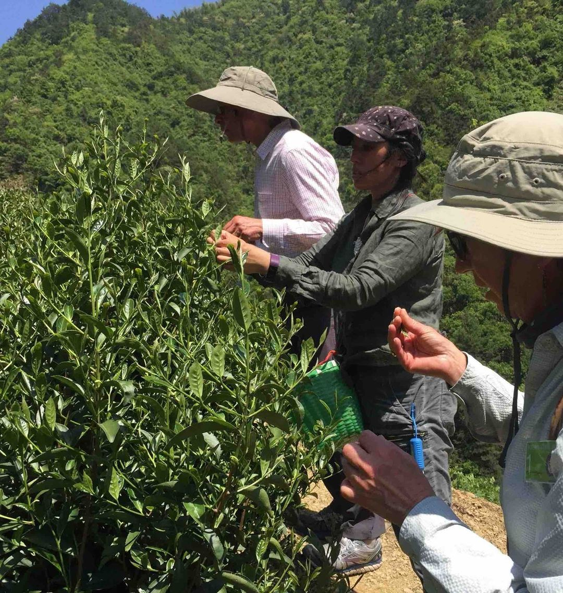
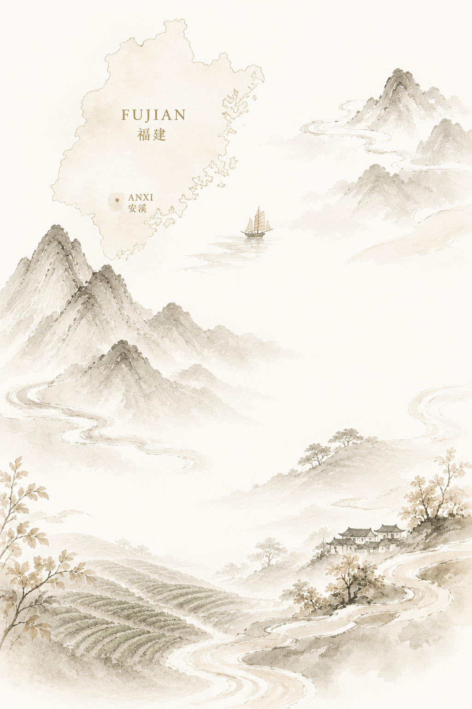
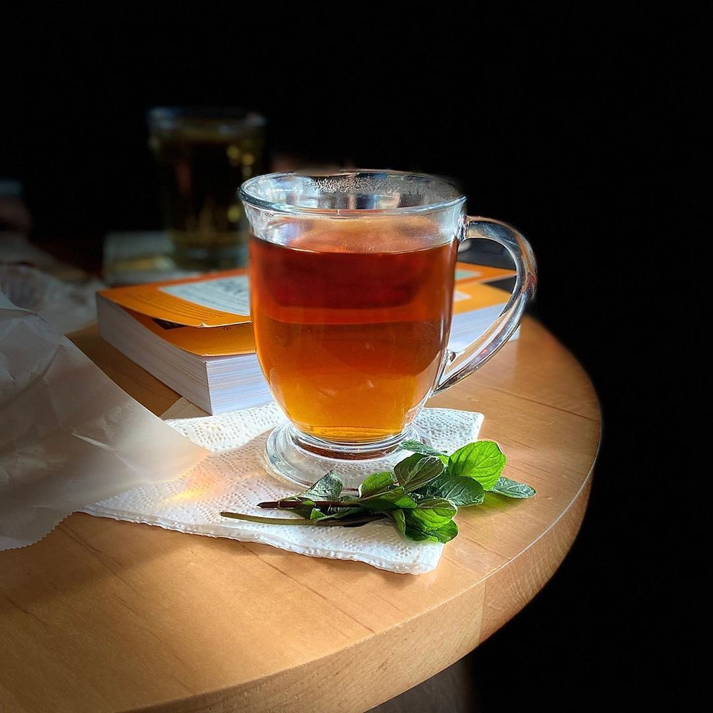
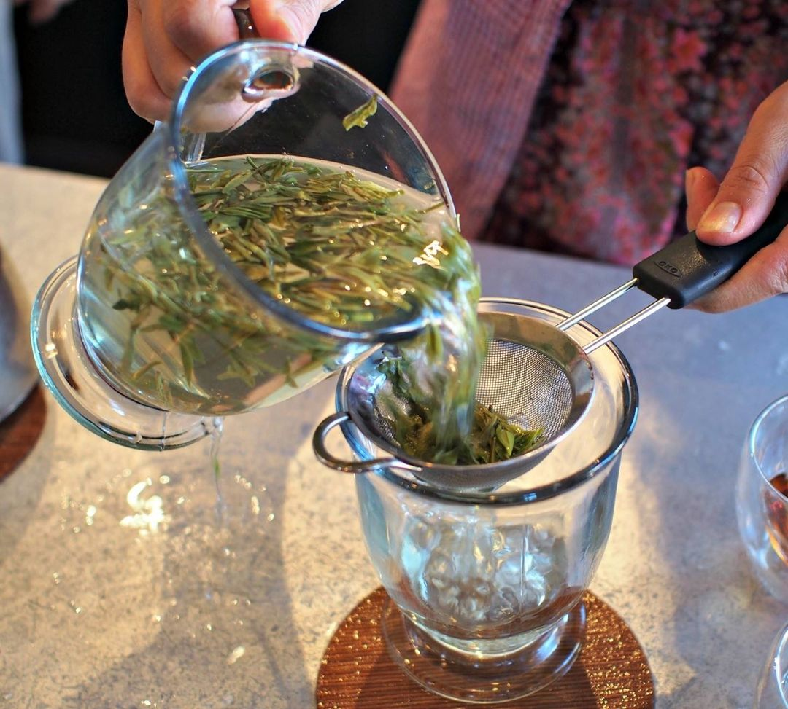

Visit the source
Walk the gardens, see the picking and processing environment, and understand what can’t be learned from a finished sample alone.
China trips are where Sophie’s does the slow work: visiting gardens, tasting at origin, asking questions, and deciding which teas are worth bringing home.

The page should show the work behind the catalog: gardens walked, leaves handled, tea tasted beside the people who made it, and context carried back to Oakland.
As John and Bijou send more material, this becomes the place to document the sourcing story tea by tea: province, farm visit, harvest, processing, tasting notes, and what made the tea worth sharing.
Fujian can mean green tea, white tea, Iron Goddess, cliff tea, and the history of red tea. Yunnan can mean ancient trees, raw black tea, and fully fermented teas. The trip page gives customers a way to understand why place changes the cup.
Walk the gardens, see the picking and processing environment, and understand what can’t be learned from a finished sample alone.
Evaluate aroma, body, clarity, finish, farming practices, and whether the tea has enough character to earn its place.
Translate the fieldwork into brewing notes, membership selections, product pages, videos, and blog posts customers can actually use.
This first version uses available Sophie’s imagery. The page gets much stronger as John and Bijou add real trip photos, farmer names they are comfortable sharing, tea garden locations, and short stories from each visit.



Members get the benefit of the sourcing work: guided selections, better context, and a more direct path through Sophie’s catalog.